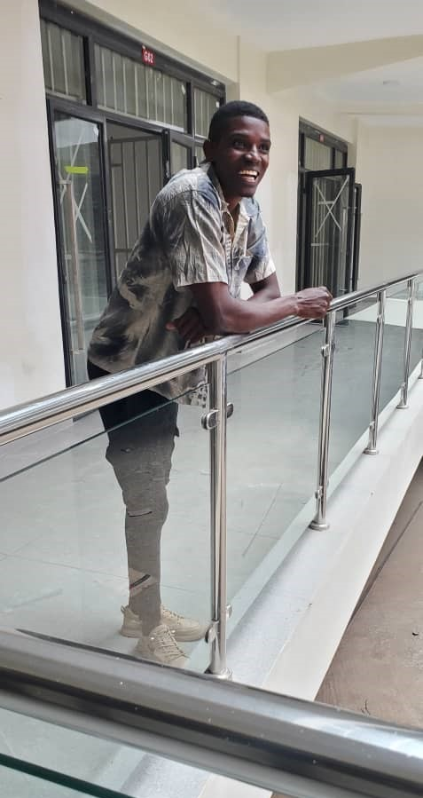
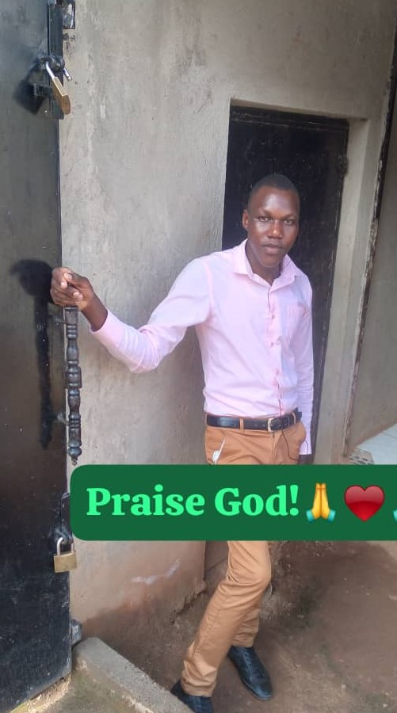

Praise the Lord...Kibaale community Nursery and Primary School Hurray!!! Am so delighted to be part of this family, this great institution of learning; By God's grace i joined this institution in the year 2006 in my baby class,I saw alot of transitions until i completed my PLE in 2014. This amazing society i can call my second home groomed me academically, socially, religiously and physically and i hope it is the same case today such that every learner who goes through this institution doesnot remain the same. i will live to tell about the different approach this junior institution used to make us different from the rest and i pledge to associate and support this institution as long as i can. To the school administration and staff, thanks for the commendable work, i believe alot more is to come. To the learners, it all begins by realising who you are, your potentials and what you hope to be in the future, prayer, discipline and hardwork are the keys to sucess. Long live the school staff, the proprietors, Alumni and entire Kibaale Community Nursery and Primary School fraternity. Righteousness Exalts The Nation...DAVID SAMANYA.
My Name is Namusabi shamira, luckly enough, am among those individuals who happened to begin my academic journey from nursery until primary seven in this institution; i thank everyone especially my teachers for the tireless efforts they made to make our study a sucess, am also grateful to my classmates who some become brothers and sisters to me, and i thank Allah who guided my parents to bring me here in this great institution. Recently i have been observing the excellence our school has attained especially in PLE, I pray that may you keep the candle burning. To the learners, this is the first step of your academic journey, take time, handle it with care, build a strong foundation and network because this is what you will need in your future, long live Kibaale Community nursery and primary school.
Ladies and Gentlemen, i acknowledge the contribution of the management of kibaale community primary school in laying a firm and strong foundation for our school, am very previledged because it has shaped my foundation also. To my fellow OGs and Obs, am very delighted to be with you, let us be proud of our school, believe in ourselves because believing in your self in the first secrete to sucess. To the learners of kibaale community nursery and primary school, never lose hope, the beginning is always the hardest. though they are hard, it doesnt mean that they are impossible because with God everything everything is possible. Righteousness excalts the nation, long live our beloved school....ISIIKO LASTONE.
My name is Hussein Waibi, i studied from kibaale community nursery and primary school from my primary one to primary seven, it was an exciting environment full of loving people. i thank my teachers and my friends who made stay at this school memorable. I promise to uplift and promote the image of this school and advertise it on many platforms as long as i can. Am also an old boy of St Patrick's SS Nabisoigi, Jinja progressive Academy and now currently pursuing a bachelors degree of science in education at kyambogo university.
Hello friends, the Obs and Ogs of our mighty school, i greet you all in the Name of our Lord, i finished my PLE in 2023, am really so delighted to be with you people as a family. I say all this because of the sweet memories we created together, the good mentorship and peaceful upbringing that i percieved throughout my primary education at Kibaale Community Nursery and Primary School; Thank you so much as we look forward to building for the future...NAIRUBA BRENDA
Dear esteemed Obs and Ogs, its an honour to address you today, reflecting on the invaluable journey that we shared at our beloved alma mater, let's revisit the essence of our school motto "Righteousness Exalts The Nation" this timeless wisdom instilled in us the significance of moral values in shaping not just our lives but contributing positively to our community.Education has been the cornerstone of our growth, team work is then another crucial lesson imparted in us by our school; As we navigate our respective careers, let us priotize and embrace professionalism and opportunities that come our way. Let the echoes of our alma mater inspire us to uphold the values of righteousness, education, teamwork and professionalism. Thank you everyone, Long live Kibaale Community Nursery And Primary School...MASSA INNOCENT
Mrs Mulungi Shifah
Mr Deo kiremugega
Mrs.viola
Mr.Tumwebaze Jude
Mrs.Jane Nakamya
Mr.Wakibi Geoffrey
Mrs.Mebra Kelemensia
Mr. Paul Wakabi